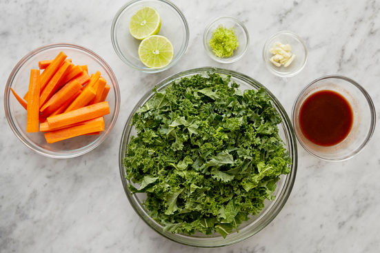

1: Place an oven rack in the center of the oven, then preheat to 450°F. In a medium pot, combine the rice, a big pinch of salt, and 1 1/2 cups of water. Heat to boiling on high. Once boiling, cover and reduce the heat to low. Cook 12 to 14 minutes, or until the water has been absorbed and the rice is tender. Turn off the heat and fluff with a fork. Cover to keep warm.

2: Prepare the ingredients & make the glaze:
While the rice cooks, wash and dry the fresh produce. Peel the carrots; quarter lengthwise, then halve crosswise. Peel and roughly chop the garlic. Remove and discard the stems of the kale; finely chop the leaves. Using a peeler, remove the lime rind, avoiding the white pith; mince to get 2 teaspoons of zest (or use a zester). Halve the lime crosswise. Halve the orange; squeeze the juice into a bowl, straining out any seeds. Whisk in the chile paste and 2 tablespoons of water until smooth.

3: Place the sliced carrots on a sheet pan. Drizzle with olive oil and season with salt and pepper; toss to coat. Arrange in an even layer. Roast 15 to 17 minutes, or until tender when pierced with a fork. Remove from the oven.

4: While the carrots roast, in a large pan (nonstick, if you have one), heat 2 teaspoons of olive oil on medium-high until hot. Add the chopped garlic and cook, stirring constantly, 30 seconds to 1 minute, or until fragrant. Add the chopped kale; season with salt and pepper. Cook, stirring occasionally, 3 to 4 minutes, or until slightly wilted. Add 1/3 cup of water; season with salt and pepper. Cook, stirring occasionally, 3 to 4 minutes, or until the kale has wilted and the water has cooked off. Transfer to the pot of cooked rice. Stir to combine; season with salt and pepper to taste. Cover to keep warm. Wipe out the pan.

5: Cook & glaze the chicken:
While the carrots continue to roast, pat the chicken dry with paper towels; season with salt and pepper on both sides. In the same pan, heat 2 teaspoons of olive oil on medium-high until hot. Add the seasoned chicken and cook 4 to 6 minutes on the first side, or until browned. Flip and cook 2 to 3 minutes, or until lightly browned. Add the glaze and cook, frequently spooning the glaze over the chicken, 2 to 3 minutes, or until the chicken is coated and cooked through. Turn off the heat; stir the butter and the juice of 1 lime half into the glaze until the butter has melted. Season with salt and pepper to taste.

6: Finish the rice & serve your dish:
To the pot of cooked rice and kale, add the lime zest, crème fraîche, raisins, and the juice of the remaining lime half. Stir to combine; season with salt and pepper to taste. Serve the glazed chicken with the finished rice and roasted carrots. Top the chicken with the remaining glaze from the pan. Enjoy!